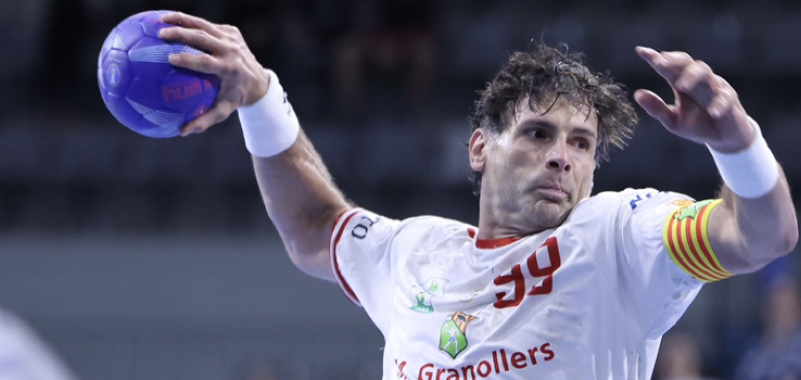
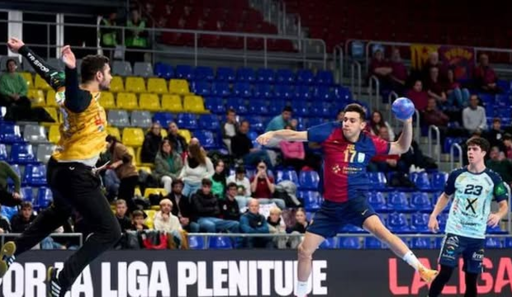
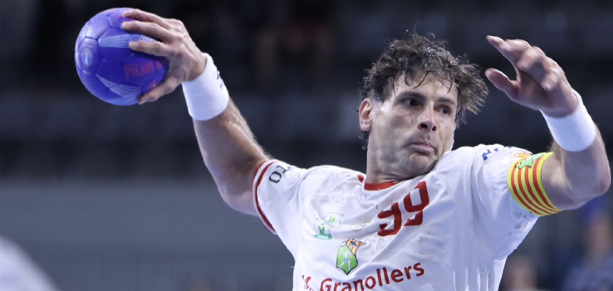
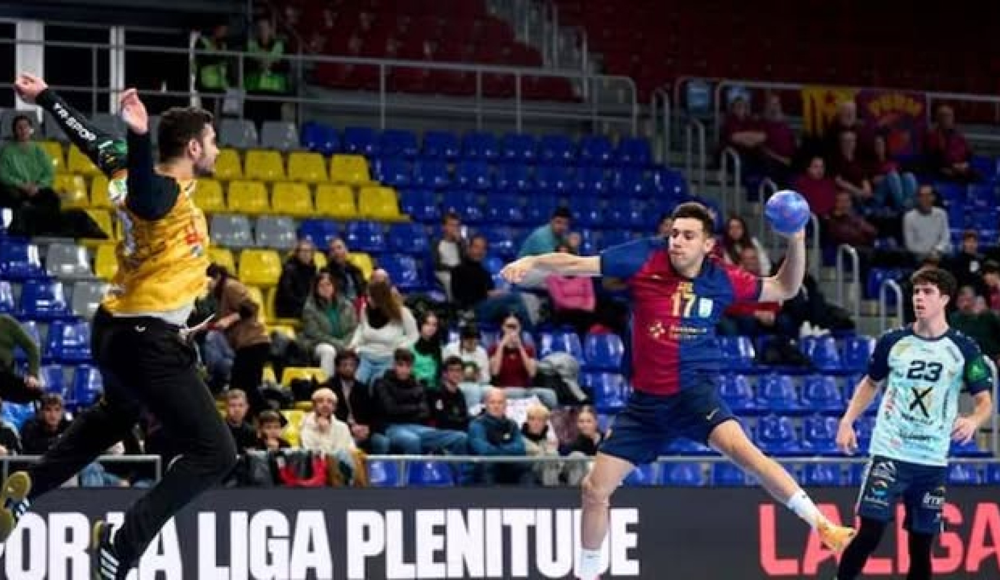

Asobal lanza una liga paralela para
potenciar la sostenibilidad social,
económica y ambiental.
El Barça derrota sin esfuerzo al
Puente Genil.
La Asobal Legacy League dará comienzo oficialmente el
próximo mes de enero de 2025. La liga explicará en las
próximas semanas los detalles de su funcionamiento,
desarrollo del proyecto, calendario e iniciativas asociadas
a la ALL.
Asobal da un paso más hacia la sostenibilidad. La
Asociación de Clubes Españoles de Balonmano (Asobal)
lanza la Asobal Legacy League (ALL), un proyecto que
busca liderar un cambio positivo para la comunidad de
balonmano y del deporte profesional en materia de
sostenibilidad social, económica y medioambiental,
según ha publicado la patronal.
Por aquello de jugar en jueves, el Barça debió pensar que
era un partido de Champions, pero no lo era, sino de Liga
Asobal, la doméstica que domina con mano de hierro. Cuando
se dio cuenta de que el Puente Genil tampoco sudaba la gota
gorda por hacer algo sonado en el Palau, se dejó llevar para
ganar sin esfuerzo al cuadro andaluz, posiblemente reservando
sus energías y salud para otras ocasiones en la que pueda tener
opciones: 44-26 (19-12). De eso también se beneficia en parte
el equipo de Ortega: los rivales no le exigen porque saben que
sería estéril e improductivo.